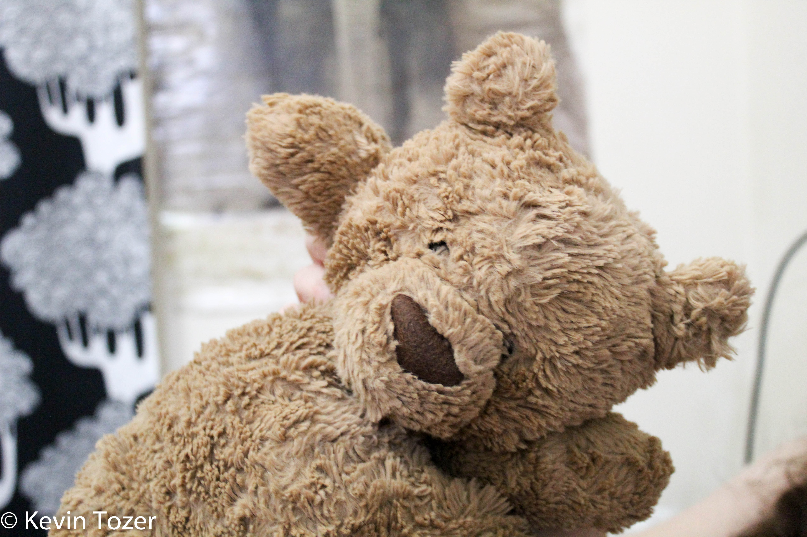
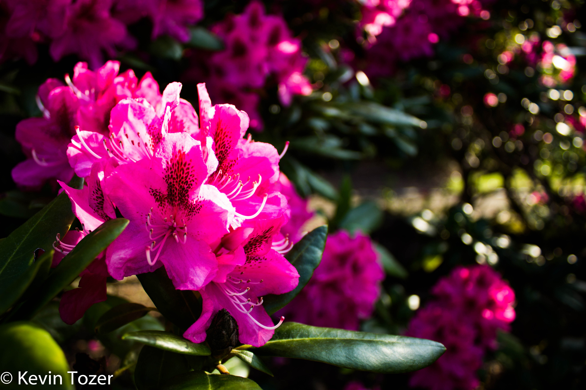

KTZR.UK
ART
I have been trying to practice creative skills, and decided to give art a go.
This is a collection of all my art, drawings and attempts painting along with Bob Ross.

My First Attempt
After attending Arts and Crafts society at Glasgow university I decided to give painting a go.
I followed along to Bob Ross painting Reflections
of Calm.
The only times i had tried at up to this point was during primary school and much later when my
friend convinced me to attend Arts and Crafts society, we made Christmas cards.

Trying Out Oil
As I had so much fun doing my first painting I decided to upgrade from the acrylic paints and printer
paper I used for my first paining.
So i borrowed some of Oil paints and paper and followed Bob Ross painting Delightful Meadow Home.
I liked how it was without the shed so decided to stop a bit early.

Time To Buy Supplies
As I had so much fun doing my first two painting I decided i would finally bite the bullet and buy
some art supplies.
That weekend I headed to my local art shop and got myself a set of paintbrushes, some oil paints and
paper to match.
When I got home, as always, I put on Bob Ross and painted along too Evening's Glow.
I got a bit carried away with the hills and just kept going.
Photography
Pictures are nice, I like taking them.
Most my photos are of inanimate objects, they don't get annoyed after 100 pictures trying to get "just the right
one".
This is a collection of some of the favourite photos I've taken so far.

George, The Bear
This is George, if you havent already guessed he's a Bear.

Fuchsia Flowers
Theses are some flowers I saw whilst walking down Kelvingrove park, I thought they looked pretty so I took a picture .
{kind=link}
{kind=link}